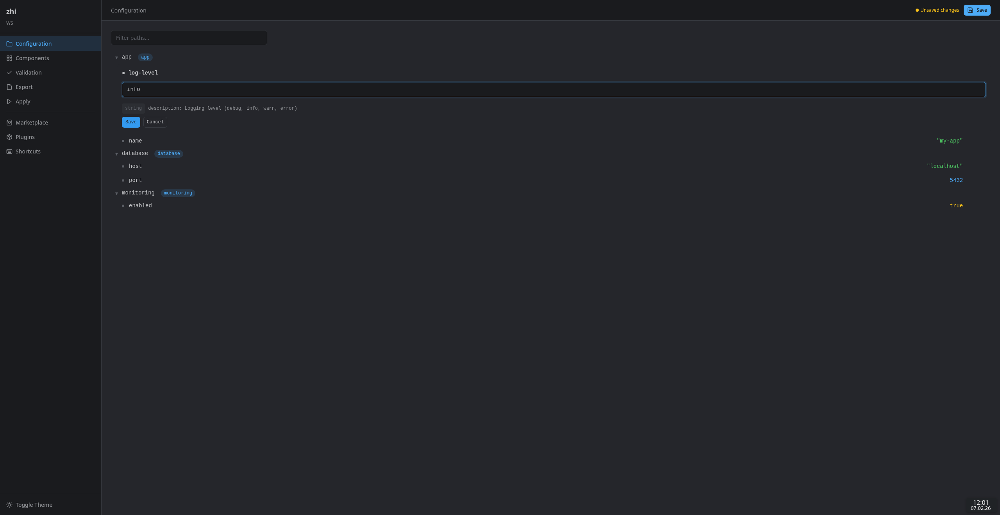

Web UI¶
The zhi Web UI is a browser-based interface for managing configuration. It provides a visual tree browser, value editor, validation dashboard, export/apply controls, component management, and a plugin marketplace.

Setup¶
The Web UI is a built-in UI plugin. Enable it in your workspace configuration:
Or launch it directly:
Configuration¶
Environment Variables¶
| Variable | Description | Default |
|---|---|---|
ZHI_WEBUI_ADDR |
Listen address (host:port) | 127.0.0.1:8080 |
ZHI_WEBUI_AUTO_OPEN |
Open browser on start (true/false) |
true |
ZHI_WEBUI_DEV |
Enable developer mode (true/false) |
false |
ZHI_WEBUI_TEMPLATE_DIR |
Filesystem path for template reloading (dev mode only) | (none) |
ZHI_WEBUI_TLS_CERT |
Path to TLS certificate PEM file | (none) |
ZHI_WEBUI_TLS_KEY |
Path to TLS private key PEM file | (none) |
ZHI_WEBUI_TLS_CLIENT_CA |
Path to CA PEM for client cert verification (mTLS) | (none) |
ZHI_WEBUI_TLS_MIN_VERSION |
Minimum TLS version (1.2 or 1.3) |
1.2 |
ZHI_WEBUI_TLS_CIPHER_SUITES |
Comma-separated list of allowed cipher suites | Go defaults |
Workspace Options¶
| Option | Type | Description |
|---|---|---|
addr |
string | Listen address |
auto_open |
bool | Open browser automatically |
dev_mode |
bool | Enable developer mode |
template_dir |
string | Template directory for live reloading |
tls_cert |
string | Path to TLS certificate PEM file |
tls_key |
string | Path to TLS private key PEM file |
tls_client_ca |
string | Path to CA PEM for client cert verification (mTLS) |
tls_min_version |
string | Minimum TLS version (1.2 or 1.3) |
tls_cipher_suites |
string[] | List of allowed TLS cipher suite names |
Features¶
Configuration Tree¶
The tree view displays all configuration paths in a hierarchical explorer. Click any leaf node to see its value. Use the filter bar to narrow paths by substring.
HTMX-powered partial updates keep the UI responsive -- only changed sections are re-rendered on interaction.
Value Editor¶
Click the edit button on any leaf node to open an inline editor. The editor auto-detects value types (string, number, boolean) and provides appropriate input controls. Multiline strings and metadata-driven dropdowns are supported.
Changes are validated inline before saving. Blocking validation errors prevent the save and display the error message in the editor.
Validation¶
The validation page runs all configured validators and groups results by severity:
- Blocking -- must be resolved before saving
- Warning -- advisory issues
- Info -- informational messages
Each result links back to the relevant configuration path.
Components¶
Components are named groups of configuration paths. The components page shows all configured components with their enable/disable state, mandatory flag, paths, and dependencies. Toggle components on or off (mandatory components cannot be disabled).
Export¶
Export configuration to files using configured templates. Supported formats include JSON, YAML, TOML, and dotenv. Features:
- Preview -- dry-run an export to see the output before writing
- Export -- write to the configured output path
- Export All -- export all configured templates at once
Apply¶
Run provisioning commands with real-time streaming output. The apply page shows a terminal-like view with SSE-based live output. Pre-export is available to regenerate files before applying.
Marketplace¶
Browse, search, and install community plugins from the OCI registry. Features:
- Search by name, type, publisher
- Filter by plugin type (config, transform, store, ui)
- Sort by relevance, downloads, or rating
- View detailed plugin information, versions, and ratings
- Rate plugins directly from the detail page
Installed Plugins¶
View all installed plugins, check for updates, and manage the plugin lifecycle:
- View version, source, and verification status
- Update individual plugins or all at once
- Uninstall external plugins
Keyboard Shortcuts¶
Navigation¶
| Shortcut | Action |
|---|---|
g t |
Go to Configuration Tree |
g c |
Go to Components |
g v |
Go to Validation |
g e |
Go to Export |
g a |
Go to Apply |
g m |
Go to Marketplace |
g p |
Go to Plugins |
Actions¶
| Shortcut | Action |
|---|---|
Ctrl+S |
Save configuration |
/ |
Focus search/filter |
Esc |
Close edit form / Cancel |
? |
Show keyboard shortcuts |
Developer Mode¶
Enable developer mode for template hot-reloading during UI development:
In dev mode, templates are re-parsed from the filesystem on every request. This allows editing HTML templates and seeing changes immediately without rebuilding.
Route registrations are logged at startup for debugging.
TLS Configuration¶
The Web UI supports TLS and mutual TLS (mTLS) for encrypted and authenticated connections.
Enabling TLS¶
Provide a certificate and key via environment variables:
export ZHI_WEBUI_TLS_CERT=/path/to/server.crt
export ZHI_WEBUI_TLS_KEY=/path/to/server.key
zhi edit --ui webui
Or via workspace options in zhi.yaml:
ui:
provider: webui
options:
addr: "0.0.0.0:8443"
tls_cert: "/path/to/server.crt"
tls_key: "/path/to/server.key"
tls_min_version: "1.3"
Mutual TLS (mTLS)¶
Require client certificates for authentication:
ui:
provider: webui
options:
addr: "0.0.0.0:8443"
tls_cert: "/path/to/server.crt"
tls_key: "/path/to/server.key"
tls_client_ca: "/path/to/client-ca.crt"
When tls_client_ca is set, clients must present a certificate signed by the specified CA.
Security Features¶
The Web UI includes several security measures:
- CSP nonces -- every response includes a unique Content-Security-Policy nonce for inline scripts and styles
- CSRF protection -- double-submit cookie pattern with HMAC-SHA256 tokens on all state-changing requests
- Security headers -- X-Content-Type-Options, X-Frame-Options (DENY), Referrer-Policy, Permissions-Policy, Cross-Origin-Opener-Policy
- Gzip compression -- automatic response compression (skipped for SSE streams)
- Content-hashed assets -- static files are served with content-hash URLs and immutable cache headers for optimal caching
- ETag support -- static file responses include ETag headers for conditional requests
- Localhost binding -- the server binds to
127.0.0.1by default, refusing remote connections